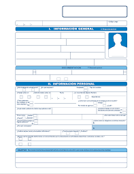
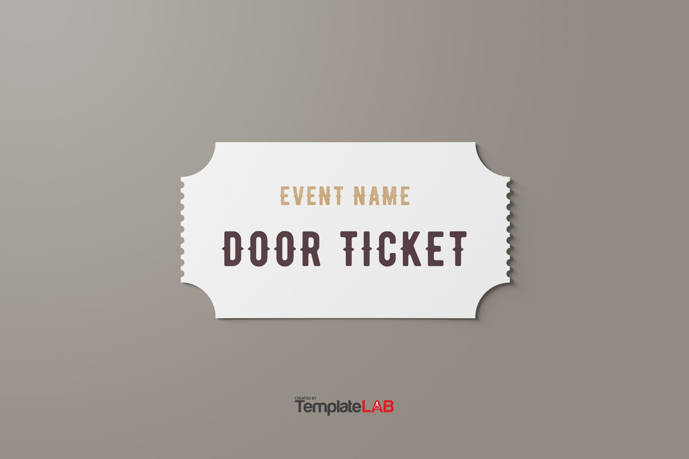
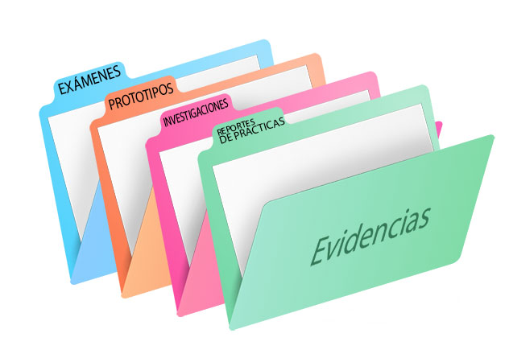

¿Quien soy?
Soy una persona atraida por la tecnologia y el desarrollo web, aunque a veces se me complican algunas cosas deseo aprender y poder desarrollar progranas dignos de un desarrollador de software y llegar a ser reconocido en este campo de la tecnologia porque soy un conquistador con sangre de conquistado.
Leer más"soy un estudiante de analisis y desarrollo de sotfware expandiendo mis conocimientos en html y css en el momento buscando elaborar trabajos dignos del titulo y porder seguir ampliando mis capacidades ya que esta carrera tiene un sin fin de conocimiento que uno puede adquirir ."
- Daniel vesga
Mis proyectos

Hoja De Vida
Proyecto de práctica diseñado con HTML y CSS. Enfoque en la estructuración de datos y el uso de lógica de maquetación para crear interfaces limpias y funcionales con un diseño atractivo .
Ver proyecto
Ticket evento
Proyecto para aprender a usar diferentes colores y tonalidades en CSS sacando nuestra capacidad artistica con esta herramienta y consiguiendo un diseño agradable al ojo.
Ver proyecto
Quien Soy
Proyecto donde se construye una pagina imitando el diseño de otra como ejemplo y hacerla lo mas funcional posible con caracteristicas nuestras de quienes creemos ser.
Ver proyecto
Portafolio
Proyecto donde crearemos una pagina para ser usada como nuestro portafolio y poder llevar las evidencias de todos los demas proyectos que hemos y sigamos haciendo mas adelante.
Ver proyecto